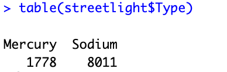
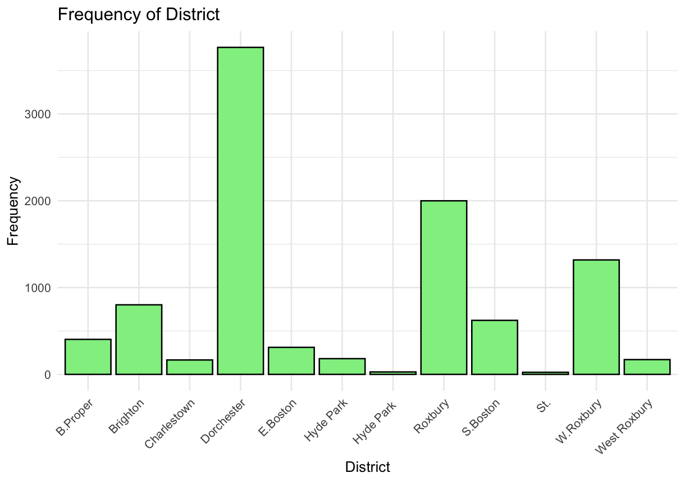
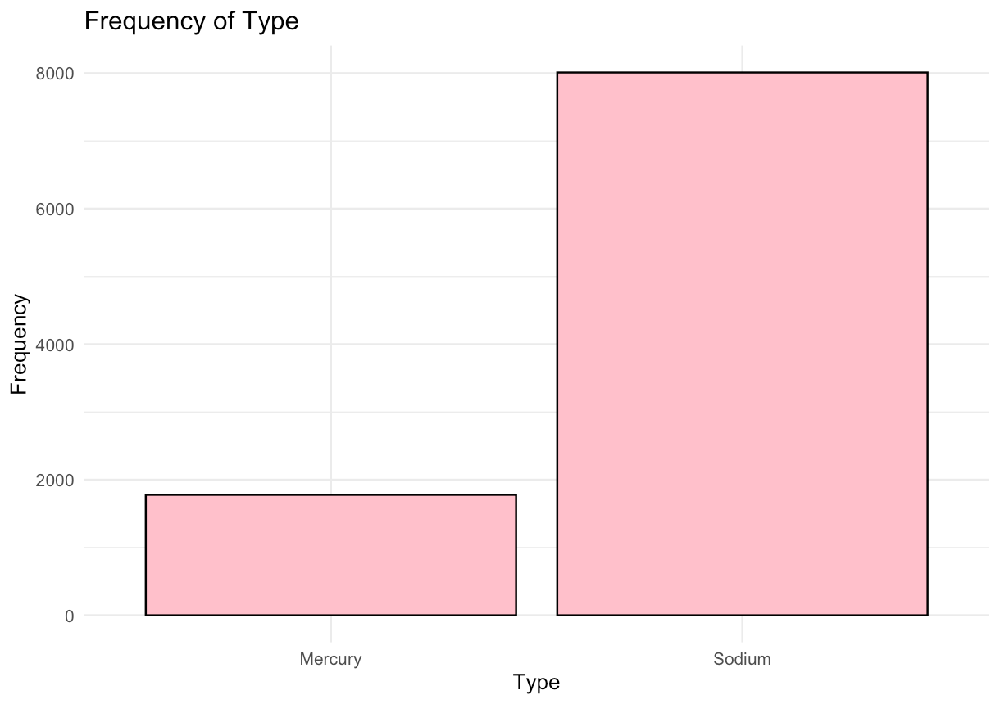
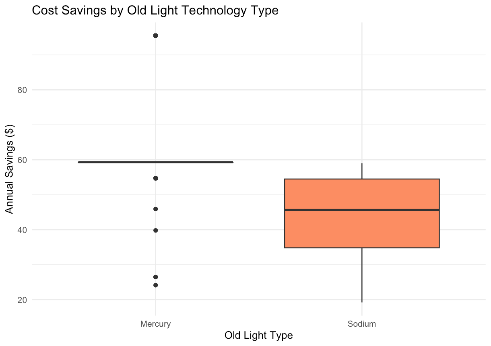

Introduction of the data & biases in the data
This analysis uses the Street Light Retrofits 2014 dataset from Boston's open data portal. The dataset tracks 9,789 street lights that the city converted to LEDs in 2014, replacing older Sodium and Mercury vapor lamps. For each light, we have the technical details (how much power it used before and after), where it's located, how much money the city saves annually, and when the work was done.
That said, this data has some important limitations. The most obvious is that we're only looking at lights that actually got converted - we don't know anything about lights that were skipped or postponed, which could tell us something about why certain areas were prioritized over others. Speaking of priorities, we also don't know if some neighborhoods got upgraded first for reasons that aren't in the data (maybe political pressure, available funding, or just easier infrastructure). The cost savings assume electricity rates stayed constant throughout the year, which probably isn't quite right. And finally, while we can measure energy savings down to the watt, we have no idea whether people actually like these new lights or if they're brighter, dimmer, or a different color than what was there before.
Data Source: Boston Open Data - Street Light Retrofits
Summary Statistics
Two Quantatitive Statistics
Summary Statistics for Existing Wattage

The old lights consumed between 0.192W and 0.470W, with a median of 0.295W. Most lights clustered at two main wattage levels (0.192W and 0.295W), suggesting the city used two standard bulb types..
Summary Statistics for Savings

Annual savings range from $19.21 to $95.50 per light, with a median of $54.50. The median exceeds the mean ($46.10), indicating some lower-saving lights pull the average down.
Two ordinal Statistics
Summary Statistics for New Size

The city chose three main LED wattage sizes: 43W (3,787 lights), 62W (3,890 lights), and 100W (2,093 lights), with very few higher-wattage options (110W, 209W, 274W had fewer than 10 installations each).
Summary Statistics for Existing Lumen Sizes

The old lights had primarily three brightness levels: 16,000 lumens (3,635 lights), 25,000 lumens (4,371 lights), and 11,000 lumens (1,592 lights). Higher brightness levels (20,000 and 45,000 lumens) were rare.
Two Categorical Statistics
Summary Statistics for District

Retrofits were concentrated in Dorchester (3,706 lights) and Roxbury (1,999 lights), with Brighton (801 lights) and South Boston (622 lights) also receiving substantial upgrades. Smaller districts like Hyde Park (28 lights) and Back Bay/Beacon Hill (24 lights) had minimal installations.
Summary Statistics for Type of Old lights

The vast majority of old lights were Sodium vapor (8,011 lights), with Mercury vapor making up the remainder (1,778 lights). Sodium technology dominated Boston's street lighting before the LED conversion.
Variable Distribution/Frequency
Quantitative Variables
Distribution of Existing Wattage

This histogram reveals a bimodal distribution with most old lights clustered at 0.192W and 0.295W, confirming two standard wattage types were used before the retrofit.
Distribution of Annual Savings

Savings are concentrated around $50-60, with a slight left skew. Some lights save as little as $20 while others reach $95, reflecting differences in old light efficiency.
Ordinal Variables
Frequency of New LED Wattage Sizes

Three LED sizes dominate: 43W (~3,800 lights), 62W (~3,900 lights), and 100W (~2,100 lights). Higher wattages (110W, 209W, 274W) were rarely used.
Frequency of Existing Brightness Levels

Most old lights operated at either 16,000 or 25,000 lumens, with fewer at 11,000 lumens. Very few high-brightness (45,000 lumen) lights existed.
Categorical Variables
Distribution of Street Lights by District

Dorchester received the most retrofits (~3,700 lights), followed by Roxbury (~2,000) and Brighton (~800). Smaller districts like Hyde Park had minimal installations.
Frequency of Old Light Technology Types

Sodium vapor dominated Boston's pre-retrofit street lighting (~8,000 lights), with Mercury vapor making up less than 20% of installations (~1,800 lights).
Exploring Relationships Between Variables
These visualizations investigate potential connections between different aspects of the street light retrofits.
1. Do certain neighborhoods save more money?
Annual Cost Savings by Boston District

This boxplot compares cost savings across different Boston neighborhoods. We can see that most districts show similar median savings ($45-55), but South Boston stands out with the highest median around $95. Roxbury shows the widest variation in savings.
2. Does higher old wattage lead to more energy savings?
Relationship Between Old Wattage and Energy Savings

This scatter plot reveals the relationship between the power consumption of old lights and the annual energy saved. Clear positive clusters appear at distinct wattage levels (0.19W, 0.29W, 0.47W), with higher old wattage corresponding to greater energy savings, supporting a linear relationship.
3. Which old light technology was most wasteful?
Cost Savings by Old Light Technology Type

Comparing different old light technologies shows mercury vapor shows a narrow, consistent savings distribution around $60, while Sodium vapor has a lower median (~$45) but much greater variability, ranging from $20 to $95.
Testable Hypotheses
Based on the exploratory data analysis, three testable hypotheses emerged:
Hypothesis 1: Geographic Variation in Savings
Statement: Certain Boston districts have significantly higher average cost savings from LED retrofits than others.
How EDA led to this: The boxplot comparing savings across districts (see "Annual Cost Savings by Boston District" above) revealed visible differences in median savings between neighborhoods.
Hypothesis 2: Wattage-Savings Relationship
Statement: There is a positive linear relationship between existing light wattage and energy (kWh) saved annually.
How EDA led to this: The scatter plot of old wattage vs. energy savings (see "Relationship Between Old Wattage and Energy Savings" above) suggests a potential positive correlation.
Hypothesis 3: Technology Type Impact
Statement: Mercury vapor lights generate significantly higher annual cost savings when replaced with LEDs compared to Sodium vapor lights..
How EDA led to this: The comparison of savings by old light type (see "Cost Savings by Old Light Technology Type" above) showed distinct distributions between technology types.